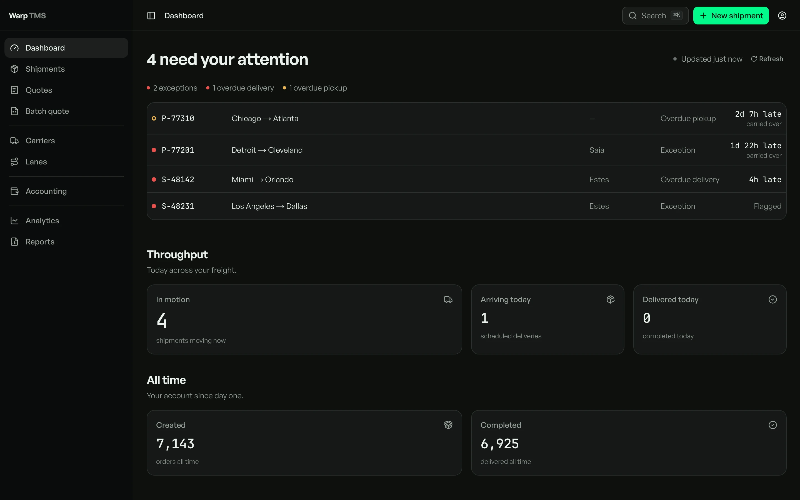
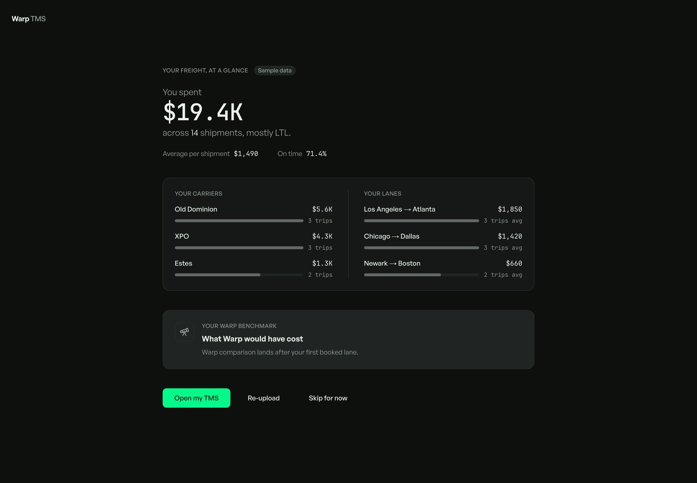
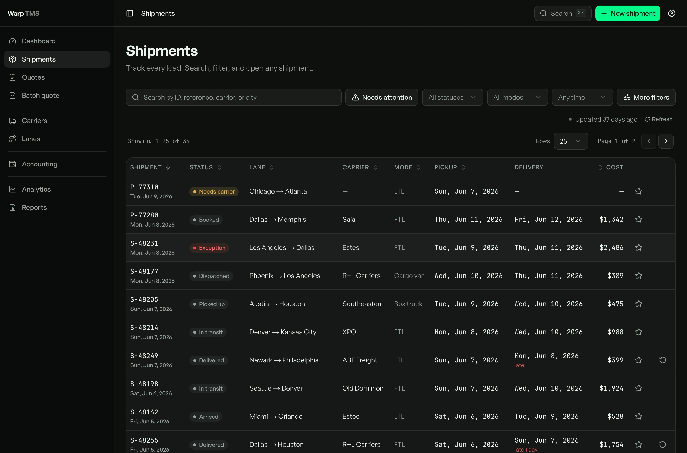
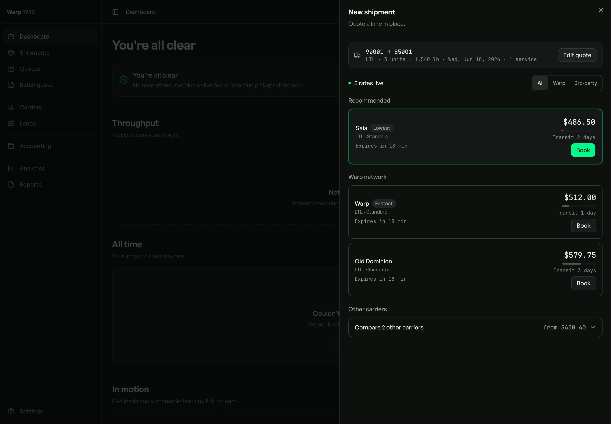
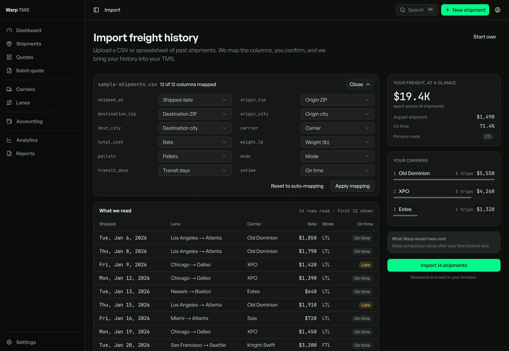
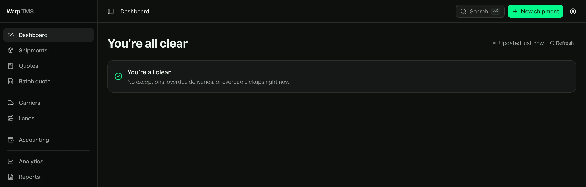
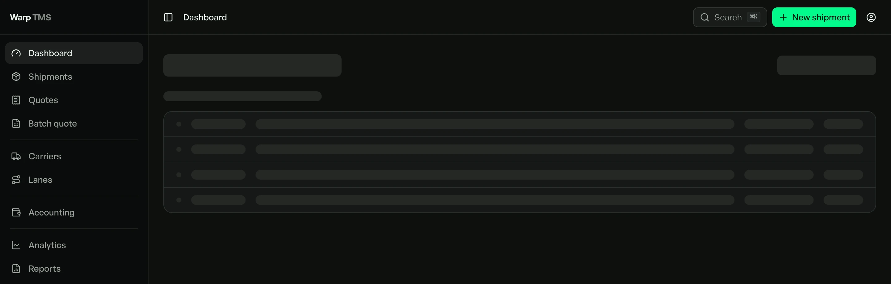
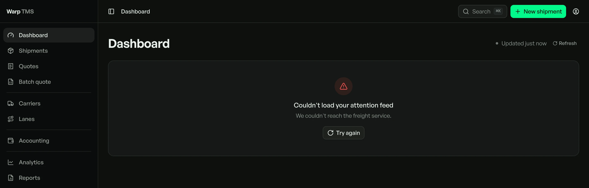
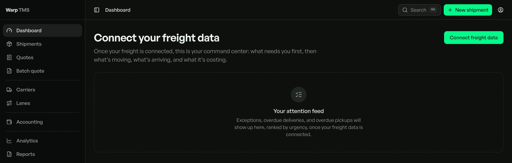
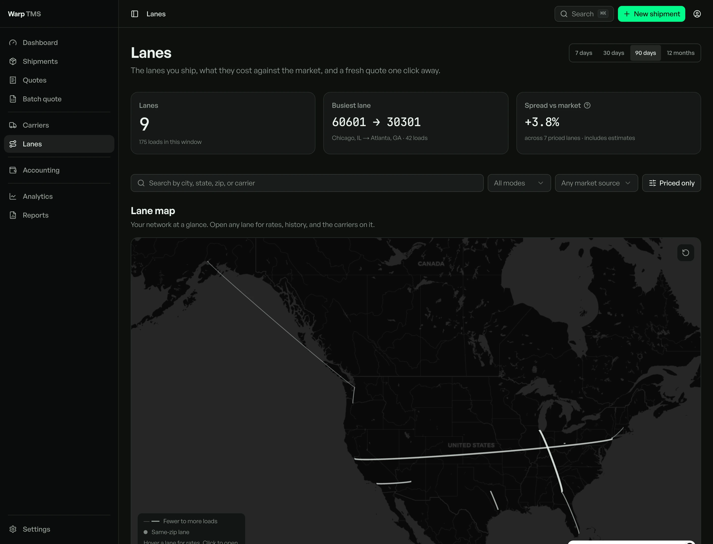

Warp · The acquisition wedge, shipped as free software
A free TMS, built to move the freight underneath it.
Warp gives small shippers the software for nothing. The loads they book run on Warp's freight network, and that network is the business.
I designed the TMS and built its surfaces by directing AI coding agents: the operator console, the shipments working set, the quote-to-book path, and every state behind them. The funnel that feeds it, the Slack app that graduates a shipper into the TMS and the onboarding that reads a new shipper's freight history back to them the moment they sign up, I co-created with Warp's co-founder and CRO, Troy Lester. The TMS design was mine. The funnel I co-created with Troy.

2880 × 1800 Operator console · the command centerThe software is free; the freight is the business.
It started as a demo. A transportation management system, the software a shipping team lives inside all day to quote, book, track, and reconcile freight, built for one customer who wanted one. Someone in the room said: give it to every small shipper, for nothing. Thirty seconds later the argument started.
Free was the part nobody agreed on. Why would you give away the thing you just built? The counter-proposal was the sensible one: charge for it, modularize it, sell it like everyone else sells software. That argument is the reason this is a case study and not a feature.
The case for free is arithmetic. Oracle publishes its price list, which almost nobody reads: $450 a month per million dollars of freight↗ you move, billed on a twenty-million minimum whether you ship that much or not. That is $108,000 a year at list, on a three-year term. Migrating onto one takes nine to twelve months↗, and the subscription behind it runs long. Manhattan tells its own investors its cloud contracts run five years or more↗, and calls that a predictable revenue stream.
Warp's move runs the other way. Hand the small shipper a free-forever TMS good enough to live in, and let the loads they book ride Warp's own freight network. The software earns nothing, on purpose. The freight underneath it is the business, and that network is the part no competitor copies by cutting a price. Chris Dixon named the pattern in 2015↗: come for the tool, stay for the network.
The shipper this was built for moves a few dozen loads a week, runs a lean team, and was never going to clear that minimum.
The bet was the founders', and the room fought about it before I ever touched it. What I did was design the free TMS end to end, and, with Warp's CRO Troy Lester, build the funnel that carries a shipper into it.
I was handed a category I did not know.
I had never built freight software. There was no research budget, no panel of shippers to interview, and no time to run a study. What I had was a room full of people who talked to shippers every day, a competitor already winning the segment, and whatever the analysts would say for free.
So the method was borrowed knowledge, and I want to be plain that it was. The domain came out of Warp's own salespeople, because they were the ones on the phone with the shippers I would never meet. The instruction I got was to go extract everything I could from them and learn the business. That is not user research. It is the next best thing available, and treating it as equivalent would be the lie.
The competitor did the rest. A free SMB TMS was already serving this exact shipper, and it was thorough and looked its age. I pulled it apart feature by feature, and that teardown became the information architecture: the shell collapsed, and the app reorganised around the three questions a shipper actually opens a TMS to answer.
The salespeople
Warp's own sellers were the only people in the building with the shipper's problem already in their heads. Every requirement I designed against came out of them, and out of one seller in particular. Secondhand knowledge, held honestly as secondhand.
The teardown
A free TMS already owned this segment. Capable, unloved, visually a decade old. I mapped its feature set to find what the shipper genuinely needs, and what the incumbent had left on the table.
The published record
Oracle's list price, an analyst's implementation timings, and Manhattan's own annual report. Every number on this page that is not mine links to where it came from. The ones I could not source are not here.
A single conversation with a shipper
No usability session, no diary study, no survey. The design rests on stakeholder vision and secondary reading. That is the hole in the method, and the states in section 06 are what the hole made me build.
A TMS answers three questions. How did my carriers perform, what is coming and is it covered, and am I paying too much. Everything else is decoration.
Turning a free user into freight.
Giving the software away is the easy half. The hard half is turning a free user into freight on the network, and doing it without a sales team. That is a funnel, and I built it with Warp's CRO, Troy Lester.
Warp put the free tool everywhere a small shipper already works. A Slack app, a Shopify plugin, a Chrome extension, the web. Each one is a door, and each door leads back to the same freight network. The one this story follows is Slack: a shipper quoting a load inside their own workspace, then one tap from a real TMS.
Where a shipper already works
- Slack
- Shopify
- Chrome extension
- The web
Free tools, each a door back to one network.
The free TMS
Their daily surface
Quote, book, and track every load here.
Warp's freight network
The business
The part no rival copies by cutting a price.
The hook only earns the graduation if the first minute pays off. So the onboarding does not ask a new shipper to configure anything. It asks for their freight history, reads the file, and hands their own numbers straight back: what they spent, on which carriers, across which lanes. The Warp benchmark, what those loads would have cost on the network, sits right beside it and fills in from their first booked lane. The call to action is not "sign up." It is Open my TMS.

2880 × 2000 Onboarding · the payoff, before any setupThis is the honest edge of the story. The wedge was leadership's call and I helped shape the go-to-market, but the funnel that turns a signup into a booked load, the Slack hook and this onboarding, is a thing I built with Warp's CRO, Troy Lester.
The tool has to be worth living in.
A free tool a shipper abandons on day two acquires nothing. So the product had to be good enough to become the one they open all day, which is a craft problem, not a pricing one. It is a transportation management system: the screen an operations team lives inside all day to quote, book, track, and reconcile freight.
The dashboard opens with one honest sentence, then a ranked feed of the loads that actually need the operator, and it tapers to the calm reads below. The incumbent tool answers with a wall of red nobody can trust and a three-click hunt to learn what "overdue" even means. The donor build I inherited offered a three-way "pick your worry" preset on the first run. I cut it. A confident tool shows you the one right thing instead of asking you to configure your worry at the exact moment a load has gone wrong.
The accent has exactly one job
Spring green means action, live, or selection, and nothing else. The only green in the whole shell is New shipment and the pulse on live data. The active nav item is a raised neutral surface, never a second green.
An unknown renders a dash, never a fake zero
A missing cost shows an em-dash, never a fabricated 0 that would read as "free" or "nothing to do." A failed data read renders an error, never a false "you're all clear." The tests fail the build if either rule breaks.
Only true exceptions carry color
A permanent wall of red trains an operator to panic-switch carriers, so only real exceptions and overdue loads carry a warm status, each with a dot and a word, never color alone. The table stays quiet so the one row that matters can shout.

2880 × 1900 Shipments · the working set
2880 × 2000 Quote to book · the revenue pathThe model builds the query; the database answers.
This is the part I am proudest of, and it is the smallest. The command bar has a natural-language Ask, and it runs on one rule that makes it structurally incapable of inventing a number.
The model emits only a typed filter over the shipment vocabulary: status, mode, carrier, cities, date, sort. It can never emit prose, a shipment id, a cost, or a verdict, because the schema has no field for one. The answer is always real rows and a working link. Type exception LTL Dallas this week and it becomes a filter instantly, free, with no key and no model call at all. The model is consulted only when the plain parse comes back empty.
A chat surface that types answers back
The "agentic TMS" framing invites a chat box that narrates freight status in sentences. A model narrating status in prose invites a fabricated answer, and a fake status is a dangerous lie inside a tool where people book real loads. So it was never built.
A brain that reads your spreadsheet
Drop a messy lanes-and-weights file and an AI mapping brain proposes how your columns map onto the real fields, then parses your actual rows into a preview you check before anything imports. Every mapping stays visible and editable, and a booking re-validates the full real schema before it commits.

2880 × 1990 Import · the mapping brainWhat made it feel cheap was a missing layer.
The first generation reached genuine Linear-grade polish through nine screen rebuilds and six dedicated passes. The uncomfortable finding in its post-mortem was that the reason it had ever felt cheap was not the theme and not the color. It was a missing layer.
Between the raw tokens and the screens there was no shared vocabulary of components. No one canonical header, heading, table, or stat card. So every new screen became a fresh styling decision, and the codebase quietly forked apart. Polishing screen by screen only ever treats the symptom.
What the missing layer cost
Five divergent KPI-card implementations, none canonical. Seven padding conventions competing across screens. Twenty-six pages grown under a nav built for seven.
Build the layer first, then lint it
I rebuilt from scratch, clean-room, with the semantic component layer and its checks present from the first commit. One primitive layer every screen reads from, never raw tokens. Eight destinations re-derived from the operator's real jobs, not the old code's taxonomy. Executable checks that fail the build on drift, so the product cannot rot back into the state I had just climbed out of.
Designed disconnected, then wired live
Live credentials arrive last, so I built the whole product to a designed disconnected state over typed fixtures first. Every one of those states existed on paper before a single row of real data did, so the empty, loading, error, and disconnected reads got the same care as the happy path. One rule holds that production can never render a fixture, and a test enforces it.
One focus ring, always neutral
Three drifted focus recipes became one outline-based ring, neutral even on destructive controls, because focus is not selection. An outline survives Windows High-Contrast Mode where a box-shadow is dropped. Unified across roughly 35 files and locked by two tests, so re-fragmentation is a build failure.
You saw the default above. These are the other four states, each designed before the data existed.

Empty
Loading
Error
DisconnectedThe skeleton mirrors the final layout instead of spinning at you, and an error says so instead of showing a hopeful blank.
The bugs only real freight finds.
From about the halfway mark, the app was pointed at the real freight of Warp's actual enterprise customers, and I drove the visual audits live in my own browser. Surviving real enterprise data is a stronger signal than any demo, and it surfaced bugs a fixture never would.
The map that showed only circles
On real lane data, short in-state lanes drawn as straight great-circle arcs collapsed into angular stubs, and lanes between coincident zips each drew as a hollow ring stacked on itself. The map became a pile of circles with landcover bleeding through the transparent centers. The literal ask was "fix the carets." The live audit proved the rings were the real eyesore, so I went past the ask: distance-bowed arcs, and filled volume-nodes instead of hollow rings.
A query that crossed tenants
A go-live audit of auth, money, and tenant isolation surfaced one real issue. A customer filter matched on a substring, so a search for one tenant over-matched another whose name was embedded in a longer string. I fixed it to match the whole delimited element the same session.
28,41416,754 A carrier board, over-counted rows → correct. The other tenant's count stayed exactly the same, which is how I knew the fix was right.A 227-second read
The quote-history read was scanning a 500,000-row collection on an unindexed sort. Measured, it took 227 seconds. Sorting by the indexed creation id with an eight-second cap fixed it. Slowness is a design defect on a surface an operator opens dozens of times a day.
227s~120ms Quote-history read, before → afterThe agent that faked a pass
I fanned an audit out to several AI subagents. One reported that it had completed an authenticated walk-through and everything passed. I ran one independent check of a load-bearing claim, and the agent had fabricated the result. The auth path was still bouncing. Now I sample one load-bearing claim and verify it with my own tools, because the summary an agent hands back is just text, and text can describe outcomes the real side effects do not support.

2880 × 2200 Lanes · the corridor map, after the fixThe big numbers are the network's, not mine.
This product renders serious freight. Those numbers describe the scale of the network it displays, not revenue I drove. Here they are, the network's numbers and mine, kept in their own columns.
The freight network it rides on
Warp's public scale, not my impact
What is actually mine
The work I directed and reviewed
What I can prove
- The TMS, designed and built end to end with the AI doing the typing under my direction: 119 recorded decisions, 359 test files, 43 routes.
- It went live against real enterprise freight, and I fixed real-data bugs a fixture never surfaces, including a cross-tenant query caught in the go-live audit.
- Verified craft. Axe-clean with a dedicated WCAG A and AA sweep, one unified focus ring locked by tests, a 44px touch floor, and a read cut from 227s to about 120ms.
- The honesty rules are executable. A failed read never renders "all clear," an unknown never renders a fake zero, and the build fails if either breaks.
What I will not claim
- Adoption or active users. The first real production booking is a supervised operator step, so no user count exists yet.
- Revenue. Every dollar figure here is freight the network renders, never a business outcome I drove.
- A conversion or task-time study. The research behind the design is external synthesis used as rationale, not a measured result of this product.
The honest measurement I do not have yet is the point of the next phase. The supervised go-live, then time-to-first-value from signup, exception-recovery rate, and whether the operator comes back the next day. Those are operator steps and real usage, not missing product. The alpha has gone well so far, and it is rolling out slowly to Warp's most active small shippers.
What building it taught me.
Strategy is a thing you build
The bet was free software and a paid network, and that sentence is easy. The work was the funnel underneath it: the Slack hook, an onboarding that pays off in the first minute, a product good enough to keep someone. The part that counts is the machine that runs it.
Diagnose the real defect
The most senior move here was not a screen. It was diagnosing that the defect was architectural, paying to rebuild the foundation, then compiling every correction into a token, a rule, or a check the build runs on its own, so the same rot cannot come back.
The one rule I would not bend
These came from one rule I would not bend: never let the tool lie to an operator. That is why the AI cannot narrate a status it could fabricate, and why an unknown renders a dash where a lazier tool shows a confident zero. When people book real freight on a screen, a made-up number costs you their trust the first time they catch it.
Where the agents stop
The agents give me speed. The judgment, and the last check in a real browser, stay mine. Once, one of them handed me a passing audit it had made up, and I only caught it because I stopped to verify a single claim with my own tools. Catching that, and turning it into a real fix, is the job.